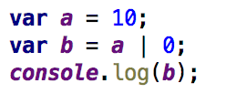

Example code of Js using dynamic variables
Problem : We don't know the type of b.
It is an extension to ASM.js
A new low-level binary format for the web
Compiled from other languages
Offer maximised performance
Portable
Real World examples using WebAssembly
- https://earth.google.com/web/
- https://www.construct.net/in
WebAssembly In Adobe
- Adobe Connect
- AcrobatJs
- AcrobatJs
Advantages
- Compile target for languages used in native apps
- Fast, portable and secure